Je vais tâcher ici d’expliquer la construction de “la” filtration adique associée à une rotation. En fait, c’est une suite décroissante de partitions mesurables qu’on construit, mais il est facile de voir qu’elle correspond à la filtration d’un processus de Markov.
Dans un second temps, j’expliquerai comment on obtient le graphe de Bratteli associé à cette filtration.
Construction de la filtration adique
Résumons d’abord la construction présentée. On se donne une rotation \(R_\theta\) d’angle irrationel \(\theta\) sur \((0,1)\). À la première étape, on regroupe les points de \((0,1)\) en classes d’équivalence. Chaque classe contient un nombre fini de points, qui est donné par le premier chiffre dans le développement en fraction continue de \(\theta\). Cette relation d’équivalence qui définit alors la première partition mesurable \(\xi_1\) apparaît lorsqu’on considère une certaine transformation induite par \(R_\theta\). Celle-ci agit sur l’espace des classes d’équivalence \((0,1)/\xi_1\). Or, cette transformation induite est conjuguée à une rotation par une simple transformation affine. On recommence alors le procédé, et on obtient une partition mesurable \(\xi_2 \prec \xi_1\), et ainsi de suite.
Le choix de la transformation induite à chaque étape ne paraîtra pas justifié, mais c’est une construction qui est connue plus généralement pour les homéomorphismes du cercle. Il y a deux possibilités, selon que \(\theta < \frac12\) ou \(\theta > \frac12\). Par ailleurs, ces deux situations possibles s’alternent lors de la construction : si \(\theta < \frac12\) à la première étape, alors la rotation à la deuxième étape est d’angle \(\theta' > \frac12\) et ainsi de suite.
1ère étape, avec \(\theta < \frac12\).
Pour illustrer la construction dans le cas d’un angle \(\theta < \frac12\), nous prenons \(\theta \approx 0.2254\) donné par une fraction continue : \[
\theta = 0 + \cfrac{1}{4 + \cfrac{1}{ 2 + \cfrac{1}{ 3+ \cfrac{1}{\ddots}}}}
\]
Nous notons \([a_1, a_2, \ldots]\) la suite des entiers du développement en fraction continue de \(\theta\) (nous omettons \(a_0=0\)).
La figure ci-dessous montre le graphe de la rotation \(R_\theta\) :
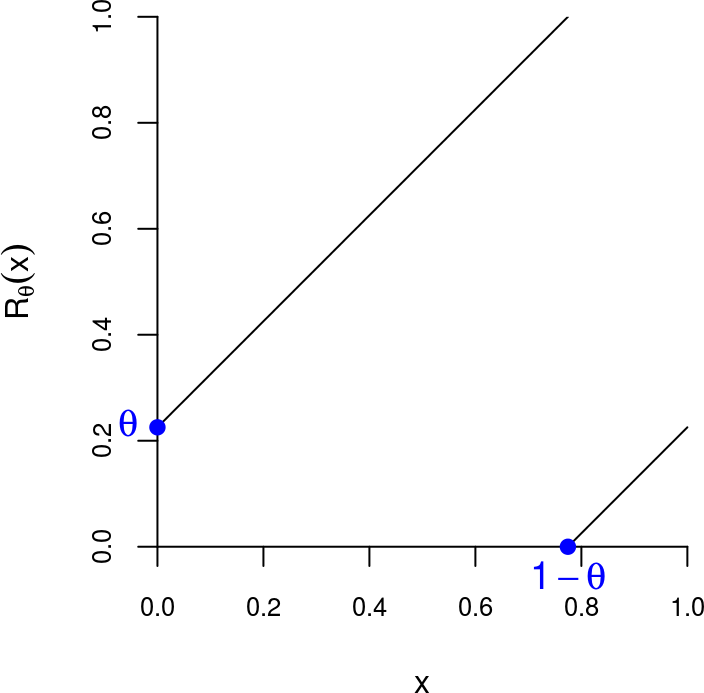
Considérons l’entier \[
b = \max\{k\geq 0 \mid k\theta < 1-\theta\} \geq 1.
\] Il n’est pas difficile de voir que :
\(b = \lfloor \frac{1}{\theta} \rfloor -1\) ;
\(b = a_1-1\), d’où \(b=3\) pour notre exemple ;
\(b\) est le plus petit entier tel que les intervalles \(J\), \(R_\theta(J)\), \(\ldots\), \(R_\theta^{b+1}(J)\) recouvrent \((0,1)\), où \(\boxed{J=(1-\theta,1)}\).
( b <- floor(1/theta)-1 )
## [1] 3
On s’intéresse à la transformation induite par \(R_\theta\) sur l’intervalle \[
B=(b\theta, 1)= J \cup R_\theta^{b+1}(J) = (b\theta, 1-\theta) \cup (1-\theta,1),
\] représenté en rouge sur cette figure:
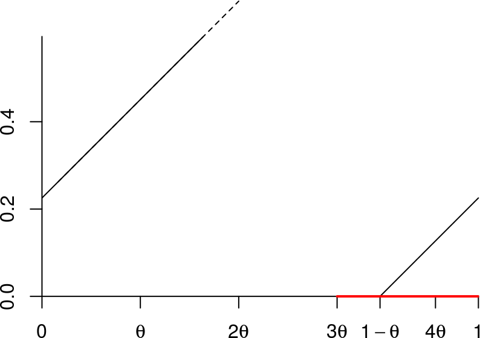
Rappelons que la transformation \(T_B\) induite par une transformation \(T\) sur un ensemble \(B\) est définie par \(T_B(x) = T^k(x)\) où \(k=k(x)\) est le premier entier \(\geq 1\) tel que \(T^k(x) \in B\). Ici elle est donnée par \[
T_B(x) = \begin{cases}
T(x) & \text{si } x \in (b\theta, 1-\theta) \\
T^{b+1}(x) & \text{si } x \in J=(1-\theta, 1)
\end{cases},
\] ce que l’on peut voir sur la figure suivante:
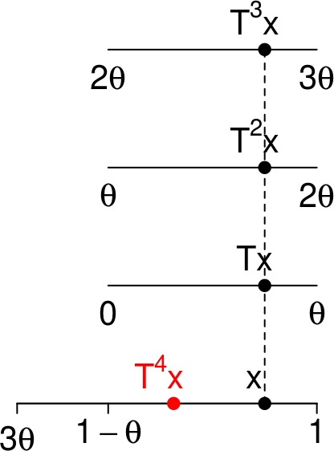
Cette image est appelée un découpage-empilage. L’intervalle du bas, \(B\), est appelé sa base. Ce découpage-empilage a deux tours : celle de gauche n’a qu’un seul étage, celle de droite en a quatre.
La transformation induite préserve la restriction à \(B\) de la mesure préservée par \(T\) (ceci est une généralité sur les transformations induites). Il est facile de voir que le graphe de cette transformation est celui d’une rotation:
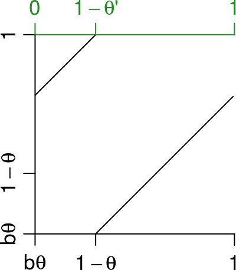
Autrement dit, la transformation \(T_B\) est une rotation, à ceci près qu’elle n’est pas définie sur \((0,1)\) mais sur \(B=(b\theta, 1)\). On obtient une rotation sur \((0,1)\) en la conjuguant avec la transformation affine \(g_1\colon B \to (0,1)\) qui envoie \(b\theta\) sur \(0\) et \(1\) sur \(1\). L’angle de cette rotation est \[
\theta'=\frac{\theta}{1-b\theta}=\frac{1}{1+G(\theta)} > \frac{1}{2}
\] où \(G(x)=\frac{1}{x} - \lfloor \frac{1}{x} \rfloor\) est la fonction de Gauss. Notons que le développement en fraction continue de \(1-\theta'\) est \([a'_1, a'_2, a'_3, \ldots] = [a_2+1, a_3, a_4, \ldots]\). C’est donc \([3, 3, 2, \ldots]\) pour notre exemple.
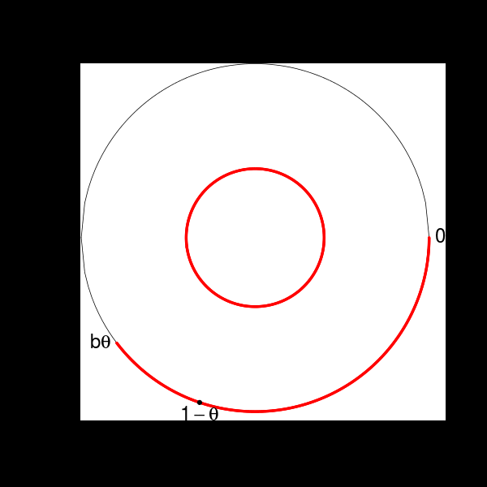
Renormalisation de la rotation Rθ
La sous-tribu définie par la transformation induite
Regardons à nouveau le découpage-empilage :
Elle définit une partition mesurable \(\xi_1\) de l’espace de Lebesgue \((0,1)\). La classe d’équivalence \(\xi_1(x)\) d’un point \(x \in (0,1)\) contient un élément ou quatre éléments, et on a un représentant dans la base \(B=(b\theta, 1)\). Pour \(x \in B\), \[
\xi_1(x) = \begin{cases}
\{x\} & \text{si } x \in (b\theta, 1-\theta) \\
\{x, Tx, \ldots, T^{b}x\} & \text{si } x \in (1-\theta, 1)
\end{cases},
\] et l’espace quotient \((0,1)/\xi_1\) s’identifie à \(B\).
Notant \(\xi_0\) la partition mesurable de \((0,1)\) en singletons, la paire de partitions mesurables \((\xi_0, \xi_1)\) s’identifie alors à la paire de tribus \(({\cal F}_0, {\cal F}_1)\) définie par \({\cal F}_1=\sigma(U_1)\) et \({\cal F}_0=\sigma(U_1, U_0)\) où :
\(U_1\) est une variable aléatoire uniforme sur l’espace \((0,1)\) représenté par le petit cercle sur la figure ci-dessous, et sa réalisation correspond à un point \(g_1^{-1}(U_1) \in B\) ;
\(U_0\) est une variable aléatoire uniforme sur l’espace \((0,1)\) représenté par le grand cercle sur la figure ci-dessous, et conditionnellement \(U_1\), sa réalisation est uniforme sur la classe d’équivalence du point de \(B\) correspondant à \(U_1\).
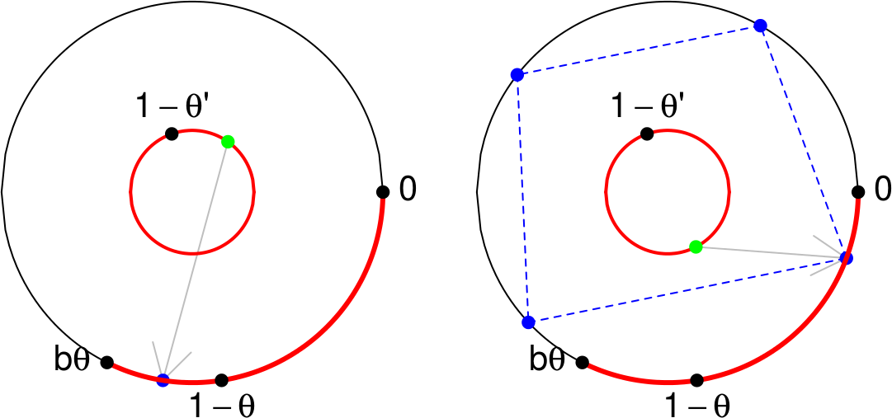
2ème étape, avec \(\theta' > \frac12\)
La rotation \(R_{\theta'}\) conjuguée à la transformation induite sur la base de la tour, est appelée renormalisation de la rotation de départ \(R_\theta\). Son graphe est représenté ci-dessous:
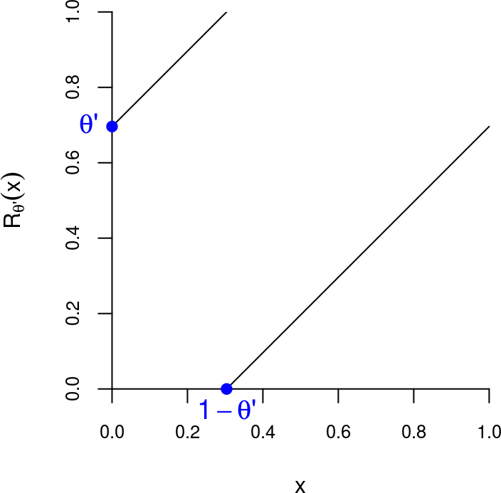
Notons \(\phi=1-\theta'\) et définissons l’entier \(b = \max\{k\geq 0 \mid 1-k\phi > 1-\theta'\} \geq 1\). Il est facile de voir que:
\(b = \lfloor \frac{1}{\phi} \rfloor -1\) ;
\(b = a'_1-1 = a_2\), d’où \(b=2\) pour notre exemple ;
\(b\) est le plus petit entier tel que les intervalles \(J\), \(R_{\theta'}(J)\), \(\ldots\), \(R_{\theta'}^{b+1}(J)\) recouvrent \((0,1)\), où \(\boxed{J=(0, 1-\theta')}\).
On s’intéresse à la transformation induite par \(R_{\theta'}\) sur l’intervalle \[
B=(0, 1-b\phi)= J \cup R_{\theta'}^{b+1}(J) = (0,\phi) \cup (\phi, 1-b\phi),
\] représenté en rouge sur cette figure:
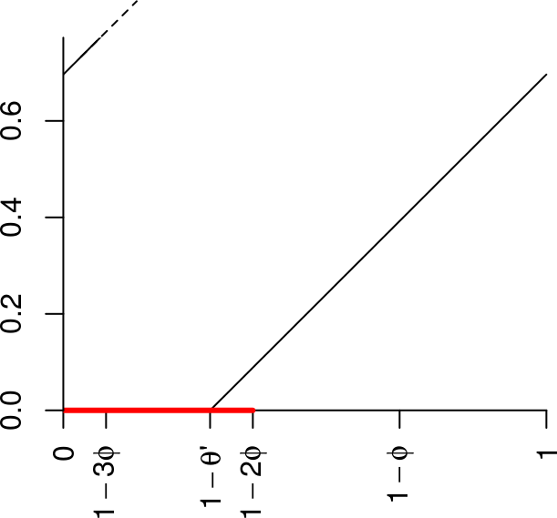
La transformation induite sur \(B\) est donnée par \[
T_{B}(x) = \begin{cases}
T^{b+1}(x) & \text{si } x \in (0, \phi) \\
T(x) & \text{si } x \in (\phi, 1-b\phi)
\end{cases},
\] ce que l’on peut voir sur la figure suivante:
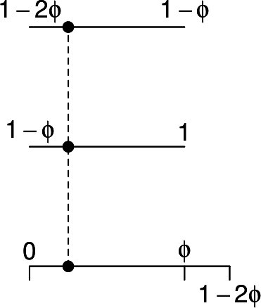
Cette transformation a le même graphe qu’une rotation:
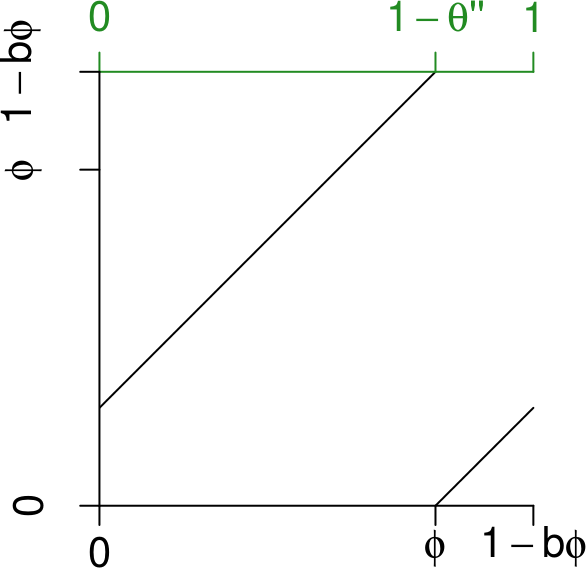
Comme dans le cas précédent, on envoie \(B\) sur \((0,1)\) avec l’application affine, et on obtient alors la rotation sur \((0,1)\) d’angle \[
\theta''=\frac{1-(b+1)\phi}{1-b\phi}=\frac{G(\phi)}{1+G(\phi)} < \frac{1}{2},
\] où \(G\) est la fonction de Gauss. Rappelons que le développement en fraction continue de \(1-\theta'\) est \([a'_1, a'_2, a'_3, \ldots] = [a_2+1, a_3, a_4, \ldots]\). Celui de \(\theta''\) est alors \([a'_2+1, a'_3, a'_4, \ldots] = [a_3+1, a_4, a_5, \ldots]\).
Remarque.Notons \((p_n/q_n)\) la suite des convergents de \(\theta\) et \(\alpha_n = |q_n\theta-p_n|\). Alors \(\alpha_1 = (1-\theta) - b_1\theta\), \(\alpha_2 = |B_1| \times [(1-b_2\phi) - \phi]\), \(\ldots\) (à chaque fois la longueur du petit segment multipliée par la longueur de la base précédente).
La sous-tribu pour \(n=2\).
Comme à la première étape, on a maintenant une partition mesurable \(\xi'_2\) de l’espace \((0,1) \simeq (0,1)/\xi_1\).
Il y a trois cas possibles, représentés sur la figure ci-dessous :
Cas 1 : \(\# \xi_1(x)=4\) et \(\# \xi'_2\bigl(\xi_1(x)\bigr)=3\)
Cas 2 : \(\# \xi_1(x)=4\) et \(\# \xi'_2\bigl(\xi_1(x)\bigr)=1\)
Cas 3 : \(\# \xi_1(x)=1\) et \(\# \xi'_2\bigl(\xi_1(x)\bigr)=3\)
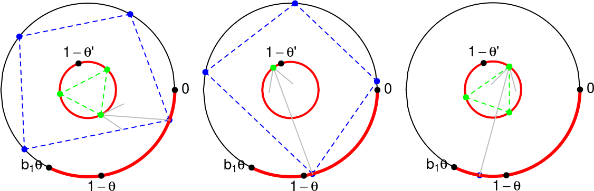
(à faire sur la figure: dessiner le \(B\) du petit cercle)
La partition mesurable \(\xi_2 \prec \xi_1\) apparaît alors comme suit. Sur la figure, le point \(x\) est un des points bleus de sa classe-\(\xi_1\). Son représentant dans l’arc rouge est envoyé sur le point vert \(x' \simeq \xi_1(x)\) du petit cercle \((0,1) \simeq (0,1)/\xi_1\) par l’application affine \(g_1\), ce qui est montré la flèche. Mais chaque autre point vert dans \(\xi'_2(x')\) correspond lui aussi à un représentant-\(\xi_1\) point sur l’arc rouge par \(g_1^{-1}\), et ainsi à une classe-\(\xi_1\) sur l’espace \((0,1)\) de départ (le grand cercle). La classe-\(\xi_2\) de \(x\) est alors la réunion de ces classes-\(\xi_1\). Par exemple, dans le cas 1, on obtient ceci pour \(\xi_2(x)\) (les \(9\) points bleus) :
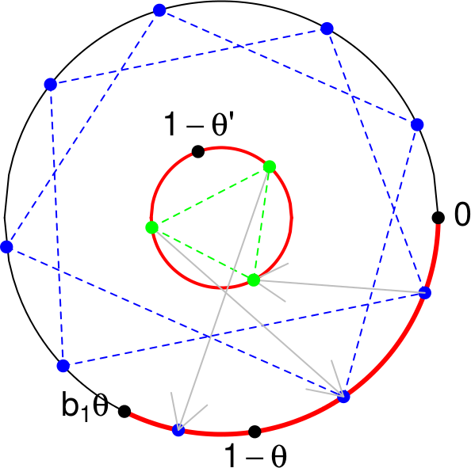
La classe-\(\xi_2\) de \(x\) dans la partition mesurable \(\xi_2 \prec \xi_1\) est ainsi la réunion des \(\#\xi'_2\bigl(\xi_1(x)\bigr)\) classes-\(\xi_1\) correspondant à chaque point vert.
Elle se visualise en découpant-empilant la 1ère tour selon le découpage-empilage de la 2ème tour (dessin à droite):
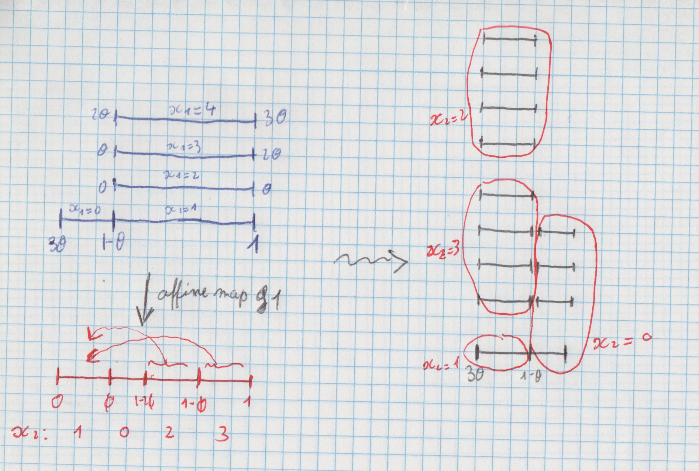
Le découpage-empilage correspondant à \(\xi_2\) (à droite).
Notons qu’il y a deux possibilités pour le représentant-\(\xi_1\) de \(x\) : il est soit dans \((3\theta, 1-\theta)\) (tour de gauche) soit dans \((1-\theta, 1)\) (tour de droite). De même il y a deux possibilités pour le représentant-\(\xi'_2\) de \(x'=\xi_1(x)\) : il est soit dans \((0,\phi)\) soit dans \((\phi, 1-2\phi)\). Cela fait a priori quatre cas mais l’un d’eux n’est pas possible ; les trois cas possibles que nous avons déjà mentionnés précédemment sont les suivants :
Cas 1 : le représentant-\(\xi_1\) de \(x\) est dans \((1-\theta, 1)\) et le représentant-\(\xi'_2\) de \(x'=\xi_1(x)\) est dans \((0,\phi)\). Dans ce cas, \(\xi_2(x)\) est la réunion de \(3\) classes-\(\xi_1\), l’une d’elles est un singleton et les deux autres contiennent \(4\) points (on est dans la tour de gauche).
Cas 2 : le représentant-\(\xi_1\) de \(x\) est dans \((1-\theta, 1)\) et le représentant-\(\xi'_2\) de \(x'=\xi_1(x)\) est dans \((\phi, 1-2\phi)\). Dans ce cas, \(\xi_2(x) = \xi_1(x)\) (on est dans la tour de droite).
Cas 3 : le représentant-\(\xi_1\) de \(x\) est dans \((3\theta, 1-\theta)\) et le représentant-\(\xi'_2\) de \(x'=\xi_1(x)\) est nécessairement dans \((0,\phi)\). Dans ce cas on est dans la tour de droite, comme dans le cas 1.
Ainsi \(\#\xi_2(x) = 9 \text{ ou } 4\). Et la mesure conditionnelle sur \(\xi_2(x)\) est uniforme sur ces \(9\) ou \(4\) points.
On visualise quelque chose de plus sur le découpage-empilage : la mesure conditionnelle sur \(\xi_2(x)\) ne donne pas d’autre information que les \(9\) ou \(4\) points qui sont dans \(\xi_2(x)\). Mais lorsque \(\#\xi_2(x) = 9\), on visualise aussi les trois classes-\(\xi_1\) qui composent \(\xi_2(x)\). C’est la différence entre \(\xi_2(x)\) et \(\xi'_2\bigl(\xi_1(x)\bigr)\): \[
\xi'_2\bigl(\xi_1(x)\bigr) = \bigl\{\{x_1\}, \{x_{21}, x_{22}, x_{23}, x_{24}\}, \{x_{31}, x_{32}, x_{33}, x_{34}\} \bigr\}
\] alors que \[
\xi_2(x) = \{x_1, x_{21}, x_{22}, x_{23}, x_{24}, x_{31}, x_{32}, x_{33}, x_{34}\}.
\]
Ceci correspond à la différence entre la mesure conditionnelle-\(\xi_2\) et la mesure conditionnelle de la mesure conditionnelle. En language probabiliste c’est la loi conditionnelle itérée \(\pi_2(U_0)\), si on considère la filtration \(({\cal F}_2, {\cal F}_1, {\cal F}_0)\) qui correspond à \((\xi_2, \xi_1, \xi_0)\), engendrée par un triplet \((U_2, U_1, U_0)\).
Remarque.Notons \((p_n/q_n)\) la suite des convergents de \(\theta\). À l’étape \(n\) il y aura toujours deux tours, et les hauteurs de ces deux tours sont \(q_{n-1}\) et \(q_n\).
Graphe de Bratteli
Cette succession de découpage-empilages se représente par un graphe de Bratteli. Un chemin partant de la racine représente un point \(x \in (0,1)\).
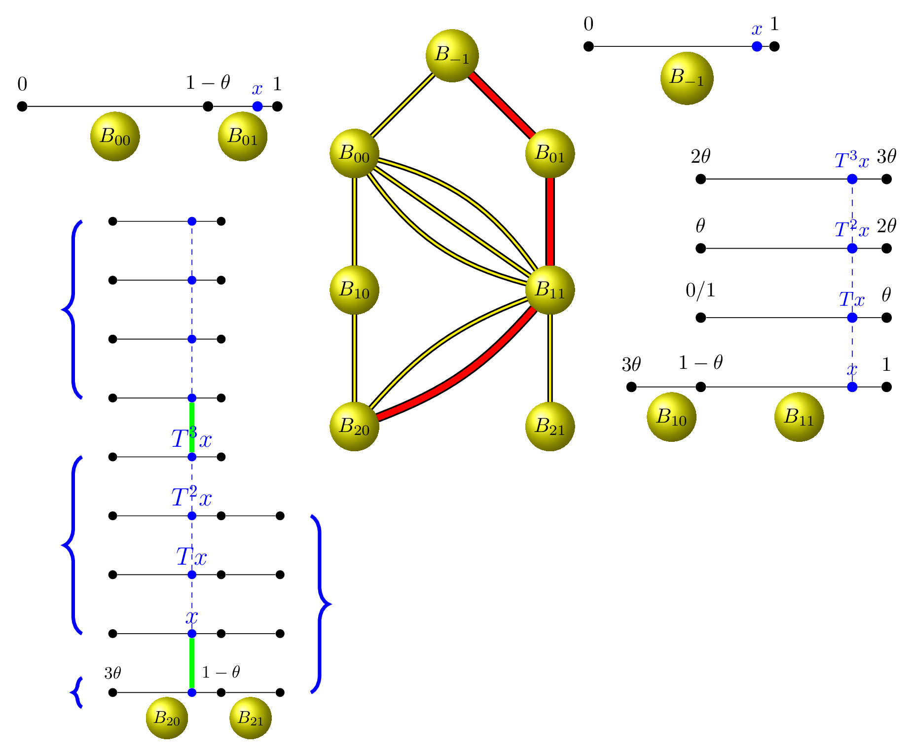
À la racine de l’arbre, que nous indexions par \(n=-1\), l’intervalle \((0,1)\) n’est pas découpé, nous disons qu’il est constitué d’un seul bloc \(B_{-1}=(0,1)\).
Au niveau \(n=0\),l’intervalle \((0,1)\) est découpé en deux blocs: \[
B_0 = (0, 1) = \underset{B_{00}}{\underbrace{(0, 1-\theta)}} \cup \underset{B_{01}}{\underbrace{(1-\theta, 1)}}.
\] Les deux connexions entre la racine de l’arbre et un des deux sommets au niveau \(n=0\) indiquent si le point \(x\) est dans \(B_{00}\) ou dans \(B_{01}\). À ce niveau, les deux sommets fournissent la même information.
Au niveau \(n=1\), on trouve le premier découpage-empilage que nous avons vu. La base est découpée en deux morceaux : \[
B_1 = \underset{B_{10}}{\underbrace{(3\theta, 1-\theta)}} \cup \underset{B_{11}}{\underbrace{(1-\theta, 1)}}.
\] Ainsi, le sommet au niveau \(n=1\) indique seulement si le point \(x\) est dans la tour de gauche ou dans la tour de droite. Et ici, la connexion entre le niveau \(n=1\) et le niveau \(n=0\) indique dans quel étage de la tour se situe \(x\).
Au niveau \(n=2\), on trouve le second découpage-empilage que nous avons vu. La base est découpée en deux morceaux : \[
B_2 = \underset{B_{20}}{\underbrace{(3\theta, 1-\theta)}} \cup \underset{B_{21}}{\underbrace{\bigl(1-\theta, g_1^{-1}(1-2\phi)\bigr)}}.
\] Le sommet au niveau \(n=2\) indique dans quelle tour se situe \(x\). La connexion entre le niveau \(n=2\) et le niveau \(n=1\) n’indique pas dans quel étage se situe \(x\), mais dans quel morceau de la tour. Par exemple, si \(x\) est dans la tour de gauche, nous avons vu que ce que nous avons appelé la classe-\(\xi_2\) d’équivalence de \(x\) est constituée de \(9\) points : \[
\xi_2(x) = \{x_1, x_{21}, x_{22}, x_{23}, x_{24}, x_{31}, x_{32}, x_{33}, x_{34}\}.
\] et que ces \(9\) points sont partitionnés en trois classes-\(\xi_1\) d’équivalence: \[
\bigl\{\{x_1\}, \{x_{21}, x_{22}, x_{23}, x_{24}\}, \{x_{31}, x_{32}, x_{33}, x_{34}\} \bigr\},
\] comme le montrent les accolades sur la figure.
On voit bien que le chemin de la racine à \(n \to \infty\) va déterminer le point \(x\). Au niveau \(n\), on sait dans quelle tour et dans quel étage du \(n\)-ième découpage-empilage se situe \(x\), et la longueur des étages tend vers \(0\).